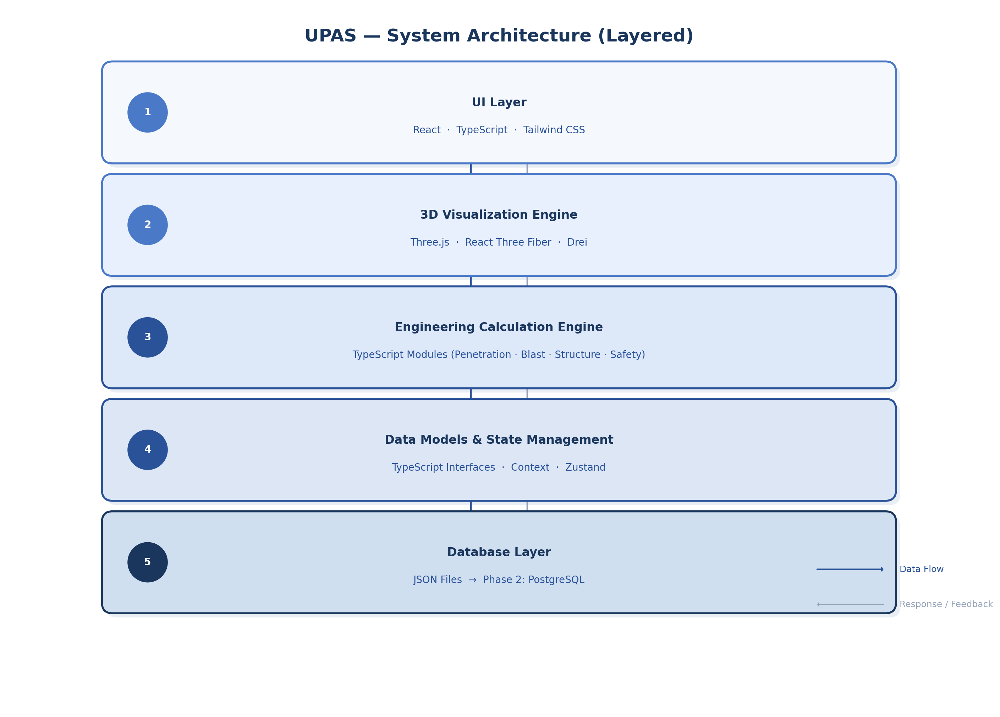
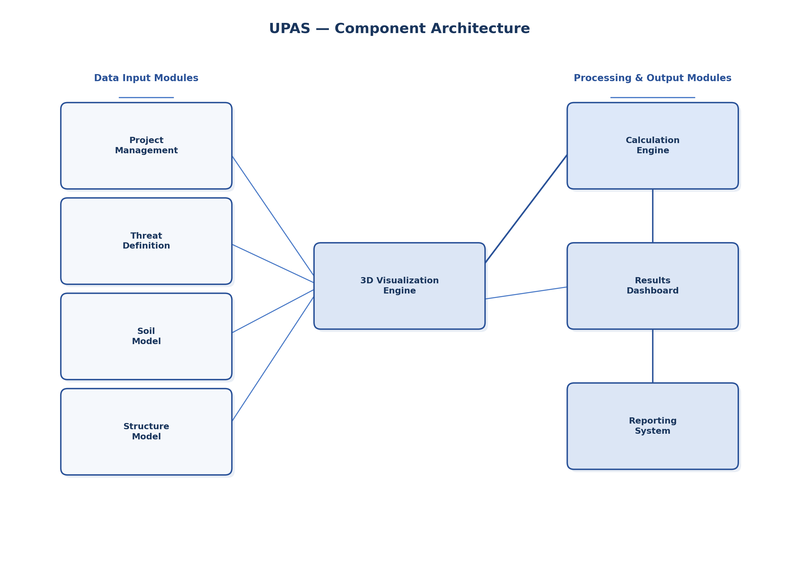
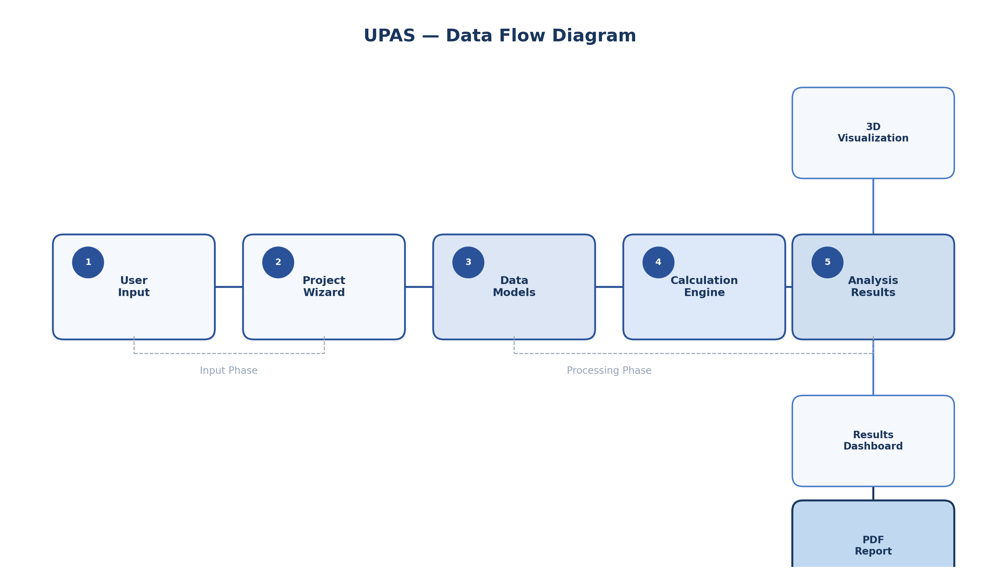
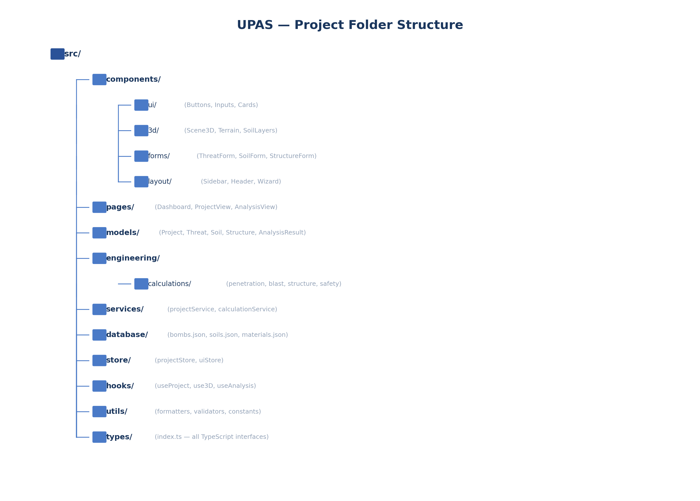

هدف المشروع وطبيعته
1.1 هدف المشروع
يهدف مشروع UPAS (Underground Protection Analysis System) إلى إنشاء منصة هندسية تفاعلية تعمل عبر المتصفح، تتيح للمستخدمين تعريف حالات تحليل هندسية كاملة تتضمن تهديدا أمنيا محددا وطبقات تربة متعددة ومنشآت تحت أرض متنوعة الأشكال، ثم إجراء التحليلات الهندسية اللازمة وعرض النتائج في نموذج ثلاثي الأبعاد تفاعلي يمكن تدويره وتكبيره واستعراض تفاصيله الهندسية بدقة. المنصة مصممة لتكون أداة احترافية تخدم المهندسين المدنيين والعسكريين في مجال الحماية تحت السطحية، حيث تجمع بين سهولة إدخال البيانات ودقة العرض الهندسي.
تتمحور فلسفة التصميم حول فصل واضح بين طبقات النظام المختلفة، بحيث تتم إدارة واجهة المستخدم بشكل مستقل عن محرك الحسابات الهندسية، ويكون النموذج ثلاثي الأبعاد واجهة المراجعة الرئيسية التي ترتبط كل قيمة هندسية فيها بعنصر مرئي يمكن للمهندس اختياره واستعراض بياناته. هذا الفصل يضمن قابلية التوسع والصيانة، ويجعل من الممكن إضافة معادلات حسابية جديدة أو أنواع منشآت إضافية دون التأثير على باقي أجزاء النظام.
الهدف النهائي هو تمكين المستخدم من إنشاء مشروع جديد في بضع خطوات عبر معالج مشروع مُوجّه (Project Wizard)، ثم الانتقال إلى واجهة التحليل ثلاثي الأبعاد حيث يرى المنشأة والتربة والتهديد معا في بيئة واحدة، مع إمكانية مراجعة جميع الأبعاد والسماكات والنتائج قبل استخراج تقرير هندسي شامل بصيغة PDF يتضمن صورا من النموذج ثلاثي الأبعاد وجميع البيانات والنتائج.
1.2 طبيعة التطبيق ونطاقه
UPAS هو تطبيق ويب (Web Application) يعمل بالكامل من المتصفح دون الحاجة لتثبيت أي برامج إضافية على جهاز المستخدم. في المرحلة الأولى، يعمل النظام بالكامل على جانب العميل (Client-Side) مع تخزين البيانات محليا، مما يجعله قابلا للاستخدام في بيئات لا تتوفر فيها اتصالات شبكة مستقرة، وهو أمر بالغ الأهمية في التطبيقات الهندسية الميدانية.
يستهدف النظام فئتين رئيسيتين من المستخدمين: فئة المستخدم الأساسي (User) الذي يمتلك صلاحيات إنشاء المشاريع وإدخال البيانات وتشغيل التحليل ومشاهدة النتائج، وفئة المراجع أو المهندس (Reviewer / Engineer) الذي يتمتع بصلاحيات إضافية تشمل مشاهدة جميع المعاملات ومراجعة النماذج والنتائج وإضافة ملاحظات فنية. هذا التصنيف يتيح استخدام النظام في بيئات العمل الجماعي حيث يتم فصل دور التصميم عن دور المراجعة والاعتماد.
| الخاصية | الوصف |
|---|---|
| نوع التطبيق | تطبيق ويب تفاعلي (Web Application) |
| منصة التشغيل | المتصفح (Chrome, Firefox, Edge, Safari) |
| اللغة | عربية (RTL) مع دعم المصطلحات الإنجليزية التقنية |
| التخزين (Phase 1) | محلي (LocalStorage / JSON Files) |
| التخزين (Phase 2) | خادم مركزي (PostgreSQL) |
| الاتصال بالشبكة (Phase 1) | غير مطلوب بعد التحميل الأول |
1.3 نطاق النسخة الأولى (Phase 1)
تُعرّف النسخة الأولى من النظام بأنها نموذج أولي (Prototype) يركز على إثبات المفاهيم الأساسية وتوفير البنية التحتية اللازمة للمراحل اللاحقة. تشمل هذه النسخة إعداد بيئة العمل مع React و TypeScript و Vite، وبناء مشهد ثلاثي الأبعاد أساسي يعرض التربة والمنشأة والتهديد، وإنشاء نماذج إدخال البيانات لجميع الكيانات، وتوفير تخزين محلي لحالة المشروع. لا تتضمن هذه المرحلة محرك الحسابات الهندسية الفعلي الذي سيُبنى في المرحلة الثانية، بل تكتفي بمواضع فارغة (Placeholders) لواجهات الحسابات.
التقنيات المطلوبة
2.1 حزمة الواجهة الأمامية (Frontend Stack)
تعتمد واجهة UPAS الأمامية على مجموعة مختارة بعناية من التقنيات الحديثة التي توفر معا بيئة تطوير قوية وأداء عاليا وتجربة مستخدم سلسة. تم اختيار كل تقنية لمبرر فني واضح يتناسب مع طبيعة التطبيق الهندسي الذي يتطلب معالجة رسومية ثلاثية الأبعاد وإدارة حالة معقدة ودعم كامل للغة العربية.
| التقنية | الإصدار | الدور في المشروع | مبرر الاختيار |
|---|---|---|---|
React |
18+ | مكتبة بناء واجهة المستخدم الأساسية | نظام المكونات القابل لإعادة الاستخدام، مجتمع ضخم، دعم ممتاز ل TypeScript |
TypeScript |
5.x | لغة البرمجة الرئيسية مع أنواع صارمة | اكتشاف الأخطاء مبكرا، توثيق ذاتي عبر الأنواع، أساس قوي للنماذج الهندسية |
Vite |
5+ | أداة البناء والتطوير (Build Tool) | سرعة بناء فائقة، HMR فوري، إعداد بسيط، دعم أصلي ل TypeScript |
Three.js |
r160+ | محرك الرسوميات ثلاثية الأبعاد الأساسي | المكتبة الأكثر نضجا في WebGL، دعم كامل للرسوميات ثلاثية الأبعاد في المتصفح |
React Three Fiber |
8+ | ربط Three.js مع React | تكامل سلس بين النموذج ثلاثي الأبعاد وحالة React، مكونات تفاعلية |
Drei |
9+ | مكونات إضافية ل React Three Fiber | أدوات مساعدة جاهزة (OrbitControls, Text3D، إلخ) تُسرّع التطوير |
Tailwind CSS |
3+ | إطار عمل التصميم (Utility-First CSS) | تصميم سريع، قابلية التخصيص العالية، دعم ممتاز ل RTL |
2.2 حزمة الخلفية المستقبلية (Backend Stack)
على الرغم من أن المرحلة الأولى تعتمد بالكامل على التشغيل من جانب العميل، إلا أن المعمارية مصممة لاستيعاب إضافة خادم خلفي في المرحلة الثانية دون إعادة هيكلة جذرية. تم اختيار التقنيات الخلفية لتتسق مع التقنيات الأمامية من حيث لغة البرمجة (TypeScript) ونمط العمل، مما يُسهّل انتقال المطورين بين الواجهة والخادم ويقلل من التعقيد التقني العام للنظام.
| التقنية | الدور | متى تُستخدم |
|---|---|---|
Node.js |
بيئة تشغيل الخادم | Phase 2 - عند الحاجة إلى خادم مركزي |
TypeScript |
لغة برمجة الخادم (مشاركة الأنواع مع الواجهة) | Phase 2 - مشاركة نماذج البيانات |
PostgreSQL |
قاعدة بيانات علائقية | Phase 2 - تخزين المشاريع والمستخدمين |
REST API |
واجهة الاتصال بين الواجهة والخادم | Phase 2 - مزامنة البيانات |
2.3 مبررات اختيار التقنيات
تم اختيار حزمة التقنيات الأمامية بناء على عدة اعتبارات هندسية جوهرية. أولا، يوفر React مع TypeScript أساسا متينا لنمذجة البيانات الهندسية المعقدة التي يتطلبها النظام، حيث يمكن تعريف واجهات TypeScript صارمة لكل كيان (قنبلة، طبقة تربة، منشأة) مع التحقق من صحة البيانات في وقت التطوير. ثانيا، يُعد Three.js مع React Three Fiber المزيج الأكثر نضجا لتقديم الرسوميات ثلاثية الأبعاد في تطبيقات React، حيث يوفر Drei مجموعة غنية من المكونات الجاهزة مثل أدوات التحكم بالكاميرا والتسميات النصية ثلاثية الأبعاد وأدوات القص.
أما اختيار Vite كأداة بناء فجاء بسبب سرعته الاستثنائية في التحويل البرمجي (HMR) التي تُسرّع دورة التطوير بشكل ملحوظ مقارنة بأدوات البناء التقليدية. كما أن Vite يوفر دعما أصليا ل TypeScript و ES Modules، مما يُلغي الحاجة إلى إعدادات معقدة. وأخيرا، يوفر Tailwind CSS نظام تصميم مرنا يدعم RTL بشكل كامل، مع إمكانية تخصيص الألوان والخطوط والمسافات بسهولة لتتناسب مع الهوية البصرية الهندسية المطلوبة.
هيكل النظام العام
3.1 معمارية الطبقات
يعتمد UPAS على معمارية طبقات (Layered Architecture) واضحة تحقق الفصل التام بين المسؤوليات المختلفة في النظام. تتكون المعمارية من خمس طبقات رئيسية، كل منها مسؤولة عن نطاق محدد من العمليات وتتواصل مع الطبقات الأخرى عبر واجهات محددة بوضوح. هذا الفصل يضمن أن التغييرات في إحدى الطبقات لا تؤثر على باقي النظام، ويسمح بتطوير كل طبقة بشكل مستقل عن الأخرى.

الطبقة الأولى هي طبقة واجهة المستخدم (UI Layer) التي تتضمن جميع المكونات المرئية من صفحات ونماذج إدخال وأزرار وقوائم. هذه الطبقة مسؤولة فقط عن عرض البيانات والتقاط تفاعلات المستخدم، ولا تحتوي على أي منطق حسابي أو هندسي. الطبقة الثانية هي محرك التصور ثلاثي الأبعاد (3D Visualization Engine) المبني على Three.js و React Three Fiber، وهو المسؤول عن عرض التضاريس وطبقات التربة والمنشآت والتهديدات في بيئة ثلاثية الأبعاد تفاعلية.
الطبقة الثالثة هي محرك الحسابات الهندسية (Engineering Calculation Engine) وهو الوحدة الأكثر حساسية في النظام، حيث يحتوي على جميع المعادلات والخوارزميات المستخدمة في حساب عمق الاختراق وضغط الانفجار والأحمال الديناميكية وتقييم حالة المنشأة. هذه الطبقة معزولة تماما عن واجهة المستخدم ولا تعتمد على أي مكتبة واجهة، مما يجعل اختبارها والتحقق منها أمرا مستقلا.
الطبقة الرابعة هي طبقة نماذج البيانات وإدارة الحالة (Data Models and State Management) التي تحتوي على تعريفات TypeScript لجميع الكيانات في النظام، بالإضافة إلى آلية إدارة الحالة المركزية (عبر React Context أو Zustand). أما الطبقة الخامسة فهي طبقة البيانات (Database Layer) التي تتعامل مع التخزين والاسترجاع، وتستخدم ملفات JSON في المرحلة الأولى مع التحول إلى PostgreSQL في المرحلة الثانية.
3.2 مخطط المكونات الرئيسية
يتكون نظام UPAS من ثماني وحدات برمجية رئيسية (Modules) تعمل معا لتقديم تجربة تحليل هندسي متكاملة. كل وحدة مسؤولة عن نطاق وظيفي محدد وتتواصل مع الوحدات الأخرى عبر واجهات محددة بوضوح. المخطط التالي يوضح العلاقات بين هذه الوحدات وكيفية تدفق البيانات بينها.

يُظهر المخطط أن محرك التصور ثلاثي الأبعاد يشكل المحور المركزي للنظام، حيث يتلقى بيانات من وحدات إدخال البيانات (التهديد، التربة، المنشأة) ويعرضها في بيئة مرئية واحدة. محرك الحسابات يأخذ نفس المدخلات وينتج النتائج التي تُعرض أيضا في النموذج ثلاثي الأبعاد وعلى لوحة النتائج. نظام التقارير يجمع البيانات من جميع الوحدات لتوليد التقرير النهائي.
3.3 تدفق البيانات في النظام
يتبع النظام مسار تدفق بيانات واضح ومتسلسل يبدأ من إدخال المستخدم وينتهي بإنتاج التقرير الهندسي. هذا المسار مصمم ليكون خطيا في حالات التحليل العادية، مع إمكانية الرجوع والتعديل في أي نقطة دون فقدان البيانات السابقة. الفهم الدقيق لتدفق البيانات ضروري للمطور لضمان ربط المكونات بشكل صحيح.

يبدأ التدفق عندما ينشئ المستخدم مشروعا جديدا عبر لوحة التحكم، ثم يدخل البيانات عبر معالج المشروع (Project Wizard) الذي يمر بخمس خطوات متسلسلة: تعريف التهديد، ثم تعريف التربة، ثم تعريف المنشأة، ثم تشغيل التحليل، وأخيرا مراجعة النتائج. كل خطوة تُخزن بياناتها في نموذج المشروع المركزي، وعند اكتمال جميع البيانات يمكن تشغيل التحليل الذي يُمرر البيانات إلى محرك الحسابات ويُنتج نتائج تُعرض في النموذج ثلاثي الأبعاد وعلى لوحة النتائج.
نموذج البيانات
يُعد نموذج البيانات (Data Model) الأساس الذي يرتكز عليه النظام بأكمله. يتم تعريف جميع الكيانات والأنواع باستخدام واجهات TypeScript (Interfaces) التي توفر تحققا صارما من الأنواع في وقت التطوير وتوثيقا ذاتيا للبنية البيانية. كل كيان في النظام يمثل مفهوما هندسيا حقيقيا بعلاقات محددة مع الكيانات الأخرى. فيما يلي تعريف كل نموذج بيانات رئيسي مع شرح مفصل لكل خاصية.
4.1 نموذج المشروع (Project)
نموذج المشروع هو الكيان الجذري (Root Entity) في النظام، حيث يُجمّع جميع بيانات التحليل في كائن واحد. كل مشروع يحتوي على معلومات وصفية أساسية (الاسم وتاريخ الإنشاء) بالإضافة إلى مراجع لكائنات التهديد والتربة والمنشأة والنتائج. هذا التصميم يُسهّل عملية حفظ المشروع واسترجاعه وتصديره كملف واحد.
4.2 نموذج التهديد (Threat / Bomb)
يُمثّل نموذج التهديد القنبلة أو الذخيرة التي يُحلل النظام تأثيرها على المنشأة تحت الأرض. يحتوي النموذج على نوع السيناريو (اختراق، انفجار سطحي، أو سيناريو مخصص) بالإضافة إلى الخصائص الفيزيائية الكاملة للقنبلة مثل الكتلة وكتلة المتفجرات والأبعاد والسرعة وزاوية الاصطدام. هذه البيانات تُستخدم مباشرة في حسابات عمق الاختراق وضغط الانفجار في محرك الحسابات.
4.3 نموذج التربة (SoilProfile)
يُمثّل نموذج التربة المقطع العمودي للأرض فوق المنشأة، ويتكون من طبقات متعددة مرتبة من السطح إلى الأسفل. كل طبقة تتميز باسمها وسمكها والكثافة والمقاومة وعامل الاختراق، وهذه القيم تؤثر بشكل مباشر على حساب عمق اختراق القنبلة عبر التربة. النظام يدعم عددا غير محدود من الطبقات، مما يسمح بنمذجة تربة معقدة تتضمن رملا وطينا وصخرا بحسب الواقع.
4.4 نموذج المنشأة (Structure)
يُمثّل نموذج المنشأة الهيكل الإنشائي تحت الأرض الذي يُراد تحليل مستوى حمايته. يدعم النظام أربعة أنواع رئيسية من المنشآت: الهيكل الصندوقي (Box Structure) والهيكل القوسي (Arch Structure) والنفق الدائري (Circular Tunnel) والمنشأة متعددة الغرف (Multi Room Facility). لكل نوع أبعاد هندسية خاصة به، لكن جميع الأنواع تشترك في خصائص السماكات الإنشائية للسقف والجدران والأرضية.
4.5 نموذج النتائج (AnalysisResult)
يُمثّل نموذج النتائج مخرجات محرك الحسابات بعد تشغيل التحليل على بيانات المشروع. يحتوي على القيم المحسوبة الرئيسية مثل عمق الاختراق في التربة وموقع الانفجار وضغط الموجة الانفجارية والحمل الديناميكي الناتج وحالة المنشأة الإنشائية. هذه النتائج تُعرض في كل من النموذج ثلاثي الأبعاد (كمسميات وألوان على العناصر) ولوحة النتائج (كمجموعة من البطاقات والجداول) والتقرير الهندسي.
النموذج ثلاثي الأبعاد
5.1 محرك التصور ثلاثي الأبعاد
يُشكّل النموذج ثلاثي الأبعاد واجهة المراجعة الرئيسية في نظام UPAS، وهو ليس مجرد عنصر عرض تجميلي بل هو الأداة الأساسية التي يرى من خلالها المهندس والمراجع جميع البيانات الهندسية في سياقها المكاني الحقيقي. المبدأ الأساسي هو أن كل قيمة هندسية في النظام يجب أن تكون مرتبطة بعنصر مرئي في النموذج ثلاثي الأبعاد يمكن اختياره واستعراض بياناته، مما يخلق تجربة مراجعة هندسية شاملة ومتكاملة.
يُبنى المحرك على Three.js عبر طبقة الت abstraction التي يوفرها React Three Fiber (R3F)، مما يسمح بدمج العناصر ثلاثية الأبعاد كـ مكونات React طبيعية تتفاعل مع حالة التطبيق. مكتبة Drei توفر مكونات جاهزة مثل OrbitControls للتدوير والتكبير و Text3D للتسميات و Html للتراكبات (Overlays) التي تُعرض بيانات العناصر عند الاختيار.
5.2 المكونات ثلاثية الأبعاد
يتكون المحرك ثلاثي الأبعاد من مجموعة من المكونات المتخصصة، كل مسؤول عن عرض نوع معين من العناصر الهندسية. هذه المكونات موجودة في المجلد components/3d/ وتُستدعى من المكون الرئيسي Scene3D الذي يُدير المشهد بأكمله. فيما يلي قائمة المكونات مع وصف مسؤولية كل منها.
| المكون | المسؤولية | التفاعلات |
|---|---|---|
Scene3D |
إدارة المشهد الكلي والإضاءة والكاميرا | يستضيف جميع المكونات الفرعية |
Terrain |
عرض سطح الأرض كطائرة نصية شفافة | إظهار/إخفاء، تعديل الشفافية |
SoilLayers |
عرض طبقات التربة بألوان وأبعاد مختلفة | اختيار طبقة لعرض بياناتها |
BombModel |
عرض القنبلة (أسطوانة) مع مسار الحركة | تدوير، عرض المواصفات عند الاختيار |
PenetrationPath |
عرض مسار الاختراق عبر طبقات التربة | خط متدرج يوضح العمق |
ExplosionPoint |
عرض موقع الانفجار ككرة متوهجة | تأثير بصري ديناميكي |
BlastZone |
عرض نطاق تأثير الانفجار ككرة شفافة | تعديل نصف القطر، الشفافية |
StructureModel |
عرض المنشأة تحت الأرض (صندوق/قوس/نفق) | اختيار لعرض السماكات والمواد |
Dimensions |
عرض الأبعاد والسماكات كتسميات هندسية | إظهار/إخفاء حسب وضع المراجعة |
Labels |
تسميات نصية للعناصر (أسماء الطبقات، إلخ) | موضوعة دائما نحو الكاميرا (Billboarding) |
5.3 وضع المراجعة الهندسية (Engineering Review Mode)
يوفر النظام وضع مراجعة هندسية خاص (Engineering Review Mode) يُفعّل عند طلب المراجع أو المهندس، ويعرض جميع المعلومات الهندسية التفصيلية مباشرة على النموذج ثلاثي الأبعاد. في هذا الوضع، يظهر كل بعد هندسي وكل سماكة إنشائية كتسمية مرقمة مرتبطة بعنصرها بخط مرجعي. كما تُعرض المحاور الإحداثية ونقاط الحساب والأحمال المطبقة والنتائج المحسوبة في مواقعها الصحيحة على النموذج.
يتميز وضع المراجعة عن الوضع العادي بتفعيل مكونات إضافية مثل Dimensions الذي يرسم خطوط الأبعاد مع القيم، ومكون LoadIndicators الذي يعرض الأسهم الاتجاهية للأحمال، ومكون ResultOverlay الذي يُلوّن عناصر المنشأة حسب حالة الأمان (أخضر للآمن، أصفر للتحذير، أحمر للفشل). هذا الوضع يُعد أداة مراجعة احترافية تُغني عن الحاجة لمراجعة الأرقام في جداول منفصلة.
الوحدات البرمجية
6.1 إدارة المشاريع (Project Management)
وحدة إدارة المشاريع هي نقطة الدخول الرئيسية للنظام، حيث تتيح للمستخدم إنشاء مشاريع جديدة وحفظها وفتحها وحذفها وتصديرها. كل مشروع يُخزّن ككائن JSON متكامل في LocalStorage في المرحلة الأولى، مع إمكانية تصديره كملف JSON منفصل يمكن استيراده لاحقا. هذه الوحدة تعتمد على خدمة projectService التي تُجرّد عمليات التخزين عن باقي النظام، مما يُسهّل الانتقال إلى تخزين الخادم في المرحلة الثانية.
تتضمن هذه الوحدة صفحة لوحة التحكم (Dashboard) التي تعرض قائمة بجميع المشاريع المحفوظة مع معلومات ملخصة عن كل مشروع (الاسم، تاريخ الإنشاء، الحالة). كما توفر إمكانية البحث والتصفية حسب الاسم أو التاريخ. عند اختيار مشروع، يُحمّل النظام بياناته الكاملة ويوجّه المستخدم إما إلى معالج التعديل أو إلى واجهة التحليل ثلاثي الأبعاد حسب حالة المشروع.
6.2 تعريف التهديد (Threat Definition)
تتيح وحدة تعريف التهديد للمستخدم اختيار سيناريو التهديد وإدخال بيانات القنبلة المستخدمة. يدعم النظام ثلاثة أنواع من السيناريوهات: سيناريو الاختراق (Penetrating Threat) حيث تخترق القنبلة التربة وتنفجر قرب المنشأة، وسيناريو الانفجار السطحي (Surface Explosion) حيث يحدث الانفجار على سطح الأرض مباشرة، وسيناريو مخصص (Custom Scenario) يمكن فيه تحديد موقع الانفجار يدويا.
لتبسيط إدخال البيانات، يحتوي النظام على قاعدة بيانات محلية (bombs.json) تضم مواصفات القنابل الشائعة مع جميع بياناتها الفيزيائية. يمكن للمستخدم اختيار قنبلة من القائمة لملء الحقول تلقائيا، ثم تعديل أي قيمة حسب الحاجة. هذا النهج يوفر الوقت ويقلل من احتمال إدخال بيانات خاطئة، مع الحفاظ على المرونة الكاملة لتعريف تهديدات مخصصة.
6.3 نموذج التربة (Soil Model)
تتيح وحدة نموذج التربة للمستخدم تعريف المقطع العمودي للتربة فوق المنشأة كعدد من الطبقات المتتالية. الواجهة تعرض الطبقات بصريا من الأعلى إلى الأسفل، مع إمكانية إضافة طبقة جديدة أو حذف طبقة موجودة أو تعديل بيانات أي طبقة. كل طبقة تتطلب اسمها ونوعها (رمل، طين، صخر) وسمكها وكثافتها ومقاومتها وعامل اختراقها.
مشابهة لوحدة التهديد، يحتوي النظام على قاعدة بيانات محلية لأنواع التربة الشائعة (soils.json) تحتوي على القيم الافتراضية لكل نوع (كثافة الرمل، مقاومة الصخر، إلخ). عند اختيار نوع التربة، تُملأ الحقول بالقيم الافتراضية ويمكن تعديلها. هذا يُسرّع عملية الإدخال ويضمن استخدام قيم هندسية معقولة كنقطة بداية.
6.4 نموذج المنشأة (Structure Model)
تتيح وحدة نموذج المنشأة للمستخدم تعريف الهندسة الإنشائية للمرفق تحت الأرض. تبدأ الواجهة باختيار نوع المنشأة من الأنواع المدعومة الأربعة: الهيكل الصندوقي للغرف والملجآت، والهيكل القوسي للأنفاق ذات السقف المقوس، والنفق الدائري للأنفاق الأسطوانية، والمنشأة متعدد الغرف للمجمعات تحت الأرض المعقدة. لكل نوع، تعرض الواجهة حقول الإدخال المناسبة مع رسم توضيحي مبسط يتحديث فوريا مع تغيير الأبعاد.
من أهم خصائص هذه الوحدة القدرة على معاينة المنشأة ثلاثي الأبعاد أثناء الإدخال (Live Preview)، حيث يتحديث النموذج في المشهد ثلاثي الأبعاد فوريا مع كل تغيير في الأبعاد أو السماكات. هذا يمنح المستخدم رؤية فورية لمدى واقعية المنشأة ويساعده في اكتشاف الأخطاء مبكرا قبل تشغيل التحليل.
6.5 محرك الحسابات الهندسية (Calculation Engine)
engineering/calculations/ وتُستدعى عبر طبقة الخدمات (services/calculationService.ts).
محرك الحسابات هو العقل التحليلي للنظام، ويحتوي على المعادلات والخوارزميات الهندسية المستخدمة في تحليل مدى حماية المنشأة تحت الأرض. يتم تنظيم المحرك كوحدات مستقلة (Modules) بحسب نوع الحساب: وحدة الاختراق (penetration.ts) التي تحسب عمق اختراق القذيفة في التربة باستخدام معادلات مثل معادلة Young، ووحدة الانفجار (blast.ts) التي تحسب ضغط الموجة الانفجارية ومداها، ووحدة المنشأة (structure.ts) التي تحسب الإجهادات والأحمال على العناصر الإنشائية، ووحدة السلامة (safety.ts) التي تقيم الحالة الإجمالية للمنشأة.
يتم استدعاء محرك الحسابات من خلال خدمة مركزية (calculationService.ts) تتلقى كائن المشروع الكامل وتُرجع كائن النتائج. هذه الخدمة هي نقطة الاتصال الوحيدة بين الواجهة ومحرك الحسابات، مما يضمن الفصل التام بين الطبقتين ويسمح باستبدال أو تحسين المعادلات المستخدمة دون التأثير على واجهة المستخدم.
6.6 لوحة النتائج (Results Dashboard)
تعرض لوحة النتائج ملخصا شاملا لنتائج التحليل بطريقة مرئية واضحة تتيح للمهندس تقييم حالة المنشأة بسرعة. تبدأ اللوحة بشريط الحالة العام الذي يعرض نتيجة التحليل بألوان مميزة: أخضر للآمن (SAFE)، أصفر للتحذير (WARNING)، أو أحمر للفشل (FAIL). ثم تعرض مجموعة من البطاقات والجداول التي تفصل نتائج كل جزء من التحليل.
تشمل اللوحة أربعة أقسام رئيسية: قسم ملخص المشروع الذي يعرض الحالة العامة، وقسم نتائج التهديد الذي يعرض بيانات القنبلة وعمق الاختراق وموقع الانفجار، وقسم النتائج الإنشائية الذي يعرض الإجهادات على السقف والجدران والأحمال المطبقة ومعامل الأمان، وقسم التوصيات الذي يقترح إجراءات تحسين بناء على النتائج. كل رقم في اللوحة مرتبط بعنصر مرئي في النموذج ثلاثي الأبعاد يمكن النقر عليه للانتقال مباشرة إلى العنصر المقابل.
6.7 نظام التقارير (Reporting System)
يتولى نظام التقارير إنتاج تقرير هندسي شامل بصيغة PDF يتضمن جميع بيانات المشروع ونتائج التحليل وصورا من النموذج ثلاثي الأبعاد. التقرير مُصمم ليكون وثيقة قابلة للتقديم يمكن مشاركتها مع الجهات المعنية أو أرشفتها كجزء من التوثيق الهندسي. يتضمن التقرير سبعة أقسام مرتبة هي: بيانات المشروع، وبيانات التهديد، وبيانات التربة، وبيانات المنشأة، وصور ثلاثية الأبعاد، ونتائج التحليل، والملاحظات.
يتم التقاط صور النموذج ثلاثي الأبعاد تلقائيا من عدة زوايا محددة مسبقا عند إنشاء التقرير، مما يضمن تضمين مناظر شاملة للتحليل. يمكن للمستخدم أيضا إضافة ملاحظات نصية تظهر في قسم الملاحظات من التقرير، وهو أمر مهم لبيئة المراجعة حيث يحتاج المراجع إلى توثيق ملاحظاته وموافقته ضمن التقرير نفسه.
مكونات الواجهة
7.1 لوحة التحكم (Dashboard)
لوحة التحكم هي الصفحة الرئيسية التي تظهر للمستخدم بعد تسجيل الدخول، وتتضمن قائمة بجميع المشاريع المحفوظة مع إمكانية إنشاء مشروع جديد. التصميم الهندسي للوحة التحكم يراعي البساطة والوضوح، حيث تعرض كل بطاقة مشروع الاسم وتاريخ الإنشاء والحالة (مسودة، مكتمل البيانات، محلل) مع أزرار سريعة لفتح المشروع أو حذفه أو تصديره.
تتضمن اللوحة أيضا شريط بحث يسمح بتصفية المشاريع حسب الاسم، مع إمكانية ترتيبها حسب التاريخ أو الاسم. في أعلى الصفحة يوجد زر "مشروع جديد" بارز يبدأ معالج المشروع. بالنسبة لمستخدمي فئة المراجع، تعرض اللوحة جميع المشاريع في النظام مع إمكانية إضافة ملاحظات على أي مشروع.
7.2 معالج المشروع (Project Wizard)
معالج المشروع هو الواجهة الرئيسية لإدخال البيانات، ويعمل كمسار متسلسل (Stepper) من خمس خطوات: التهديد، التربة، المنشأة، التحليل، والنتائج. كل خطوة تعرض نموذج إدخال متخصص مع التحقق من صحة البيانات قبل الانتقال للخطوة التالية. يمكن للمستخدم التنقل بين الخطوات بحرية لتعديل البيانات السابقة في أي وقت.
| الخطوة | العنوان | المحتوى | التحقق المطلوب |
|---|---|---|---|
| 1 | تعريف التهديد | اختيار السيناريو وإدخال بيانات القنبلة | الكتلة، السرعة، زاوية الاصطدام |
| 2 | تعريف التربة | إضافة طبقات التربة مع خصائصها | طبقة واحدة على الأقل، سمك إجمالي منطقي |
| 3 | تعريف المنشأة | اختيار النوع وإدخال الأبعاد والسماكات | الأبعاد موجبة، السماكات منطقية |
| 4 | تشغيل التحليل | مراجعة البيانات وتشغيل محرك الحسابات | جميع البيانات مكتملة |
| 5 | عرض النتائج | النتائج في النموذج 3D ولوحة النتائج | لا يوجد |
7.3 واجهة التحليل ثلاثي الأبعاد
واجهة التحليل ثلاثي الأبعاد هي الصفحة الأهم في النظام، حيث يظهر المشروع كله في مشهد ثلاثي الأبعاد تفاعلي. تخطيط الصفحة يتضمن المشهد ثلاثي الأبعاد في المنتصف كعنصر رئيسي يستهلك معظم مساحة الشاشة، مع شريط جانبي (Sidebar) يعرض بيانات العنصر المختار وأدوات التحكم بالعرض (إظهار/إخفاء الطبقات، تفعيل وضع المراجعة، التقاط صور).
يدعم المشهد التفاعلات التالية: التدوير (Rotate) حول النموذج، والتكبير والتصغير (Zoom)، والتحريك الأفقي (Pan)، وإخفاء وإظهار طبقات التربة بشكل مستقل، واختيار أي عنصر ثلاثي الأبعاد لعرض بياناته، وعرض الأبعاد والسماكات الهندسية، وإنشاء مقاطع عرضية (Sections) لرؤية المقطع الداخلي للمنشأة. هذه التفاعلات تُنفذ عبر أدوات Drei مثل OrbitControls و Select و Html.
تنظيم الكود
8.1 هيكل المجلدات التفصيلي
يُعد تنظيم المجلدات أساس البنية البرمجية للنظام، حيث يُحدد مكان كل ملف وعلاقته بباقي الملفات. تم تصميم الهيكل بحيث يعكس معمارية الطبقات الموضحة سابقا، بحيث يكون كل مجلد مسؤولا عن نطاق محدد من المسؤوليات. الفصل الواضح بين المجلدات يُسهّل على المطورين العثور على أي ملف وفهم دوره بسرعة.

| المجلد | المسؤولية | أمثلة المحتويات |
|---|---|---|
components/ui/ |
مكونات واجهة المستخدم العامة القابلة لإعادة الاستخدام | Button, Input, Card, Modal, Select, Tabs |
components/3d/ |
مكونات التصور ثلاثي الأبعاد | Scene3D, Terrain, SoilLayers, BombModel |
components/forms/ |
نماذج إدخال البيانات المتخصصة | ThreatForm, SoilForm, StructureForm |
components/layout/ |
مكونات الهيكل العام للصفحات | Sidebar, Header, Wizard, PageContainer |
pages/ |
الصفحات الرئيسية للتطبيق | Dashboard, ProjectView, AnalysisView |
models/ |
تعريفات TypeScript لجميع الكيانات | Project, Threat, Soil, Structure, AnalysisResult |
engineering/ |
محرك الحسابات الهندسية (مستقل عن UI) | penetration.ts, blast.ts, structure.ts, safety.ts |
services/ |
طبقة الخدمات التي تربط UI بالبيانات والحسابات | projectService.ts, calculationService.ts |
database/ |
ملفات البيانات المرجعية (JSON) | bombs.json, soils.json, materials.json |
store/ |
إدارة الحالة المركزية (Zustand) | projectStore.ts, uiStore.ts |
hooks/ |
خطافات React مخصصة | useProject.ts, use3D.ts, useAnalysis.ts |
utils/ |
أدوات مساعدة عامة | formatters.ts, validators.ts, constants.ts |
types/ |
تعريفات الأنواع المشتركة | index.ts - جميع الواجهات والأنواع |
8.2 قواعد تنظيم الكود
لضمان اتساق الكود وجودته عبر مراحل التطوير المختلفة وبين المطورين المختلفين، تم وضع مجموعة من القواعد الصارمة لتنظيم الكود. هذه القواعد ليست مقترحات بل هي متطلبات إلزامية يجب الالتزام بها من البداية لتجنب التراكم التقني (Technical Debt) الذي يُصعّب التطوير والصيانة لاحقا.
- الفصل التام: لا تضع أي منطق حسابي داخل مكونات React. الحسابات في
engineering/فقط. - لا قيم صلبة: جميع القيم الهندسية (معاملات، كثافات، مقاومات) في ملفات JSON تحت
database/. - واجهات صارمة: كل دالة وكل مكون يجب أن يكون له نوع TypeScript صريح.
- مكونات صغيرة: كل مكون React يجب أن يكون مسؤولا عن شيء واحد فقط (Single Responsibility).
- خدمات كوسيط: لا تصل المكونات مباشرة إلى التخزين أو الحسابات. استخدم
services/.
طريقة التطوير
9.1 مبادئ التطوير
يتبع مشروع UPAS مجموعة من المبادئ الهندسية التي تضمن إنتاج كود عالي الجودة وقابل للصيانة والتوسع. هذه المبادئ مستوحاة من أفضل الممارسات في هندسة البرمجيات وتناسب خصوصية التطبيقات الهندسية التي تتطلب دقة في الحسابات ومرونة في العرض. الالتزام بهذه المبادئ من البداية يُقلل من تكلفة التطوير على المدى الطويل ويجعل إضافة الميزات الجديدة أمرا يسيرا.
أول هذه المبادئ هو المعمارية المعيارية (Modular Architecture) التي تقتضي تقسيم النظام إلى وحدات مستقلة يمكن تطويرها واختبارها بشكل منفصل. كل وحدة لها مدخلات ومخرجات محددة بوضوح ولا تعتمد على تفاصيل الوحدات الأخرى. ثاني المبادئ هو قابلية التوسع (Scalability) التي تعني أن إضافة نوع جديد من المنشآت أو معادلة حسابية جديدة يجب أن تكون عملية محدودة النطاق لا تتطلب تعديل النظام بأكمله.
ثالث المبادئ هو فصل الواجهة عن الحسابات (Separation of Concerns) الذي يضمن أن منطق التحليل الهندسي مستقل تماما عن طريقة عرض النتائج، بحيث يمكن تغيير واجهة المستخدم بالكامل دون التأثير على دقة الحسابات. رابع المبادئ هو فصل البيانات عن الكود (Data-Code Separation) الذي يمنع تضمين القيم الهندسية الصلبة داخل الكود البرمجي ويجعلها قابلة للتعديل عبر ملفات البيانات الخارجية.
9.2 إدارة الحالة (State Management)
تُدار حالة التطبيق باستخدام Zustand وهي مكتبة إدارة حالة خفيفة الوزن توفر واجهة برمجية بسيطة وأداء عاليا. تم تقسيم الحالة إلى مخزنين رئيسيين: مخزن المشروع (projectStore) الذي يحتفظ ببيانات المشروع الحالي وجميع كياناته (التهديد، التربة، المنشأة، النتائج)، ومخزن الواجهة (uiStore) الذي يحتفظ بحالة العناصر المرئية مثل العنصر المختار في النموذج ثلاثي الأبعاد ووضع المراجعة ونشاط الطبقات.
هذا الفصل بين مخزن البيانات ومخزن الواجهة يضمن أن تغييرات الحالة المرئية (مثل اختيار عنصر في المشهد) لا تؤثر على بيانات المشروع، والعكس صحيح. كما يُسهّل عملية الحفظ حيث يكفي حفظ محتوى projectStore دون الحاجة لحفظ حالة الواجهة المؤقتة.
مراحل التنفيذ
يُقسّم تطوير نظام UPAS إلى أربع مراحل متسلسلة، كل مرحلة تبني على مخرجات المرحلة السابقة. يتم التركيز على إتمام كل مرحلة بالكامل واختبارها قبل الانتقال إلى المرحلة التالية، وذلك وفق مبدأ "ابدأ صغيرا وتأكد من الأساس قبل التوسع". هذه المراحل مُصممة بحيث تنتج كل منها نظاما قابلا للاستخدام بشكل مستقل، وليس مجرد خطوات وسيطة لا قيمة لها بذاتها.
تركز هذه المرحلة على بناء الأساس التقني والهيكلي للنظام. تشمل إنشاء مشروع React مع TypeScript و Vite، وإعداد البنية التحتية للمجلدات والأنواع، وبناء مشهد ثلاثي الأبعاد أساسي يعرض التضاريس والمنشأة، وإنشاء نماذج إدخال البيانات لجميع الكيانات (التهديد، التربة، المنشأة)، وتوفير حفظ واسترجاع حالة المشروع محليا. لا تتضمن هذه المرحلة محرك الحسابات الفعلي بل توفر مواضع فارغة (Placeholders) لواجهاته.
تُبنى في هذه المرحلة المعادلات الهندسية الحقيقية داخل محرك الحسابات. تشمل تنفيذ معادلات حساب عمق الاختراق (مثل معادلة Young)، ومعادلات حساب ضغط الانفجار والملحم الديناميكي، ومعادلات تحليل الإجهاد في عناصر المنشأة، وخوارزمية تقييم السلامة وإنتاج الحالة النهائية (SAFE/WARNING/FAIL). كما تشمل ربط المحرك بواجهة المستخدم وعرض النتائج في النموذج ثلاثي الأبعاد ولوحة النتائج.
تُضاف في هذه المرحلة قدرات إدارة المستخدمين مع نظام الصلاحيات (User/Reviewer)، وقاعدة بيانات PostgreSQL مع REST API لحفظ المشاريع على الخادم، ونظام التقارير لإنتاج تقرير PDF شامل يتضمن صورا من النموذج ثلاثي الأبعاد. هذه المرحلة تحول النظام من أداة فردية إلى منصة جماعية تدعم عمل الفرق الهندسية.
تشمل هذه المرحلة إضافة ميزات متقدمة مثل تحسين أداء التصور ثلاثي الأبعاد للمنشآت المعقدة، ودعم التصدير بصيغ CAD (مثل DXF)، والتكامل مع أنظمة BIM، وإضافة أنواع تحليل إضافية، وتحسينات الأداء والتخزين المؤقت. هذه المرحلة هي مرحلة التطوير المستمر الذي يستمر بناء على احتياجات المستخدمين الفعلية.
معايير القبول
11.1 معايير قبول المرحلة الأولى
تُعرّف معايير القبول (Acceptance Criteria) للمرحلة الأولى على أنها الشروط التي يجب أن يحققها النظام لاعتباره ناجحا وجاهزا للانتقال إلى المرحلة الثانية. هذه المعايير قابلة للقياس والملاحظة ويمكن اختبارها مباشرة من خلال استخدام النظام. النظام الذي يحقق جميع هذه المعايير يُعتبر نموذجا أوليا ناجحا يُثبت صحة المعمارية المختارة وجدوى المفهوم.